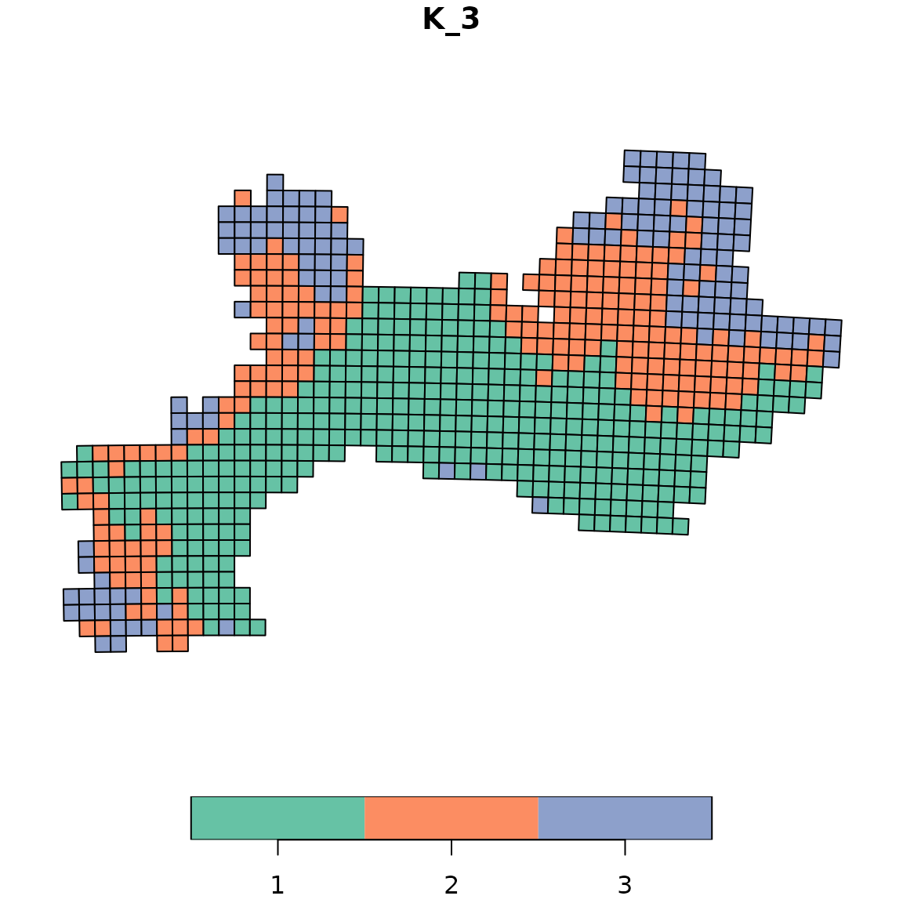
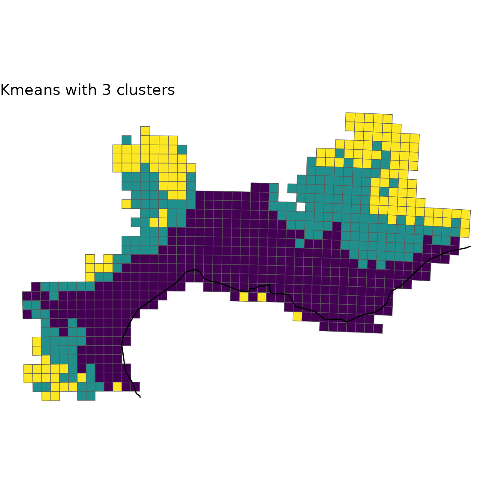
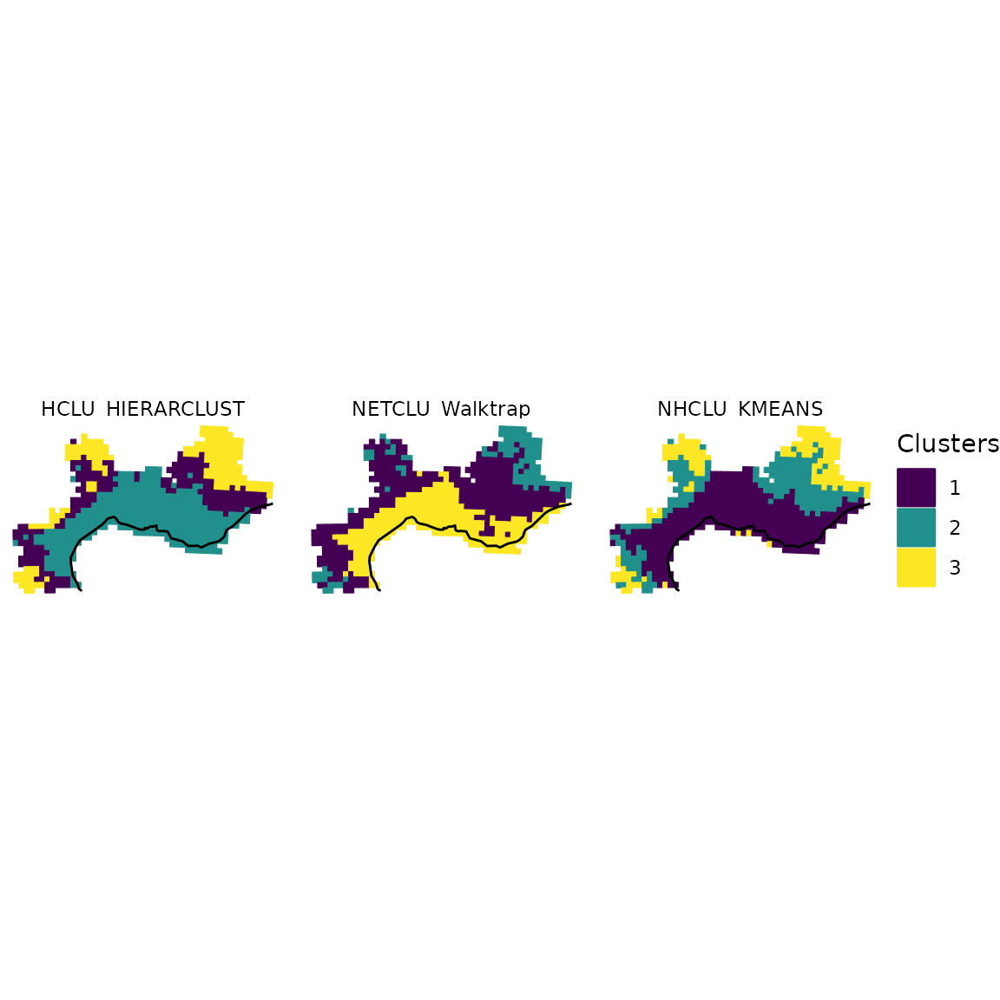

5. Visualization
Pierre Denelle, Boris Leroy and Maxime Lenormand
2023-11-03
Source:vignettes/a5_visualization.Rmd
a5_visualization.RmdIn this vignette, we aim at illustrating how to plot the bioregions
identified with the diferent algorithms available in
bioregion.
Using one of the dataset coming along with
bioregion, we show three strategies to plot your
results.
Data
For this vignette, we rely on the dataset describing the distribution of fresh water fish in Europe. We first load the matrix format of this dataset, computes the dissimilarity matrix out of it and also load the data.frame format of the data.
data(fishmat)
fishdissim <- dissimilarity(fishmat, metric = "all")
data(fishdf)Since we aim at plotting the result, we also need the object
fishsf linking each site of the dataset to a geometry.
data(fishsf)We also import the world coastlines, available from the
rnaturalearth R package.
world <- rnaturalearth::ne_coastline(returnclass = "sf")Plots
In this section, we show three ways to plot your results.
map_clusters()
The first possibility is to use the function
map_clusters() from the package. This function can directly
provide a plot of each site colored according to the cluster they belong
to.
Let’s take an example with a K-means clustering, with a number
of clusters set to 5.
fish_nhclu_kmeans <- nhclu_kmeans(fishdissim, n_clust = 5, index = "Simpson")map_clusters() function can now simply takes the object
fish_nhclu_kmeans, which is of
bioregion.clusters class, and the spatial distribution of
sites, stored in fishsf.
map_clusters(fish_nhclu_kmeans, geometry = fishsf, plot = TRUE)
Custom plot
If you want to customize yourself the plot and not simply rely on the
default option, map_clusters() gives you the possibility to
extract each site as well as its geometry and cluster number.
For this purpose, you can set the arguments like in the chunk below:
custom <- map_clusters(fish_nhclu_kmeans, geometry = fishsf,
write_clusters = TRUE, plot = FALSE)
custom## Simple feature collection with 338 features and 2 fields (with 70 geometries empty)
## Geometry type: GEOMETRY
## Dimension: XY
## Bounding box: xmin: -9.299647 ymin: 36.46054 xmax: 37.75 ymax: 69.67881
## Geodetic CRS: +proj=longlat +datum=WGS84 +no_defs +ellps=WGS84 +towgs84=0,0,0
## First 10 features:
## ID K_5 geometry
## 500 Aa 1 POLYGON ((2.09202 50.98091,...
## 2766 Abula 5 GEOMETRYCOLLECTION EMPTY
## 501 Acheloos 3 MULTIPOLYGON (((21.22557 38...
## 2277 Adige 4 POLYGON ((12.12917 47.07917...
## 504 Adour 1 POLYGON ((-0.06622891 44.10...
## 505 Agly 1 POLYGON ((2.761574 42.92824...
## 506 Agri 4 POLYGON ((16.52326 40.32881...
## 510 Albegna 3 POLYGON ((11.54804 42.5839,...
## 2278 Alfios 3 POLYGON ((21.29943 37.68212...
## 512 Aliakmon 1 POLYGON ((21.28508 40.75452...
# Crop world coastlines to the extent of the sf object of interest
europe <- sf::st_crop(world, sf::st_bbox(custom))
# Plot
ggplot(custom) +
geom_sf(aes(fill = K_5), show.legend = FALSE) +
geom_sf(data = europe) +
scale_fill_viridis_d() +
labs(title = "Kmeans with 5 clusters") +
theme_void()
Plot with facets
Finally, you can be interested in plotting several
bioregionalisations at once. For this purpose, we can build a single
data.frame gathering all the bioregions obtained from
distinct algorithms and then take advantage of the facets
implemented in ggplot2.
We first compute a few more bioregionalisation on the same dataset
using other algorithms.
fish_nhclu_pam <- nhclu_pam(fishdissim, n_clust = 5, index = "Simpson")
fish_hclu_hierarclust <- hclu_hierarclust(dissimilarity = fishdissim,
n_clust = 5)
fish_netclu_greedy <- netclu_greedy(fishdf)We can now make a single data.frame with an extra-column
indicating the algorithm used.
fish_kmeans <- fish_nhclu_kmeans$clusters
colnames(fish_kmeans)<- c("ID", "NHCLU_KMEANS")
fish_pam <- fish_nhclu_pam$clusters
colnames(fish_pam)<- c("ID", "NHCLU_PAM")
fish_hieraclust <- fish_hclu_hierarclust$clusters
colnames(fish_hieraclust)<- c("ID", "HCLU_HIERARCLUST")
fish_greedy <- fish_netclu_greedy$clusters
colnames(fish_greedy)<- c("ID", "NET_GREEDY")
all_clusters <- dplyr::left_join(fish_kmeans, fish_pam, by = "ID")
all_clusters <- dplyr::left_join(all_clusters, fish_hieraclust, by = "ID")
all_clusters <- dplyr::left_join(all_clusters, fish_greedy, by = "ID")We now convert this data.frame into a long-format
data.frame.
all_long <- tidyr::pivot_longer(data = all_clusters,
cols = dplyr::contains("_"),
names_to = "Algorithm",
values_to = "Clusters")
all_long <- as.data.frame(all_long)We now add back the geometry as an extra column to make this object spatial.
all_long_sf <- dplyr::left_join(all_long,
custom[, c("ID", "geometry")],
by = "ID")
all_long_sf <- sf::st_as_sf(all_long_sf)Now that we have a long-format spatial data.frame, we
can take advantage of the facets implemented in
ggplot2.
ggplot(all_long_sf) +
geom_sf(aes(color = Clusters, fill = Clusters)) +
geom_sf(data = europe, fill = "gray80") +
scale_color_viridis_d() +
scale_fill_viridis_d() +
theme_void() +
facet_wrap(~ Algorithm)